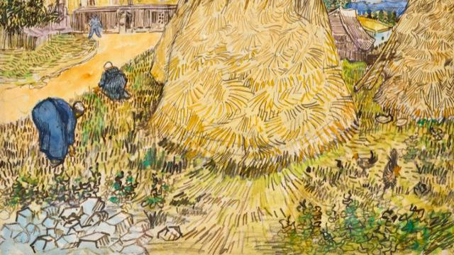

Sep 21 2021
Not temperature, snow is formed because of this factor
Snow is a natural phenomenon that occurs in countries with cold winters. Compared to temperature, it turns out that humidity plays a more important role in the formation of snow and is the reason why the snow feels cold. Reporting from the National Snow and Ice Data Center, Friday (13/8/2021), snow can occur at very cold temperatures as long as there is a source of humidity. So, how is snow formed? But it's true that some heavy snowfall can occur when temperatures are relatively warm near the ground at around minus 9 degrees Celsius, even warmer.

May 28 2021
an Gogh painting that was confiscated by the Nazis to be auctioned, estimated to sell for IDR 4.3 billion
Meules de blé is expected to sell for up to 30 million US dollars or almost Rp. 4.3 billion. Van Gogh created this painting in 1888 after he had fled to the French countryside when his health deteriorated.When Van Gogh was in Arles, he was captivated by the pastoral lifestyle around him. The pastoral lifestyle can be defined as a lifestyle related to the countryside and pastoralism.